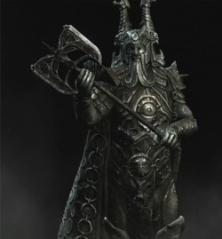
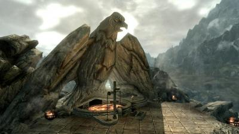
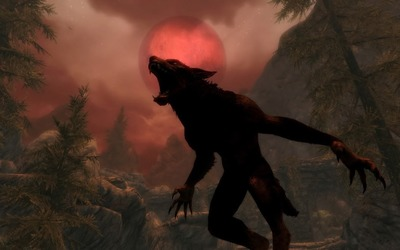

Соратники по праву могут считаться одной из древнейших организаций Скайрима. По легенде Соратники произошли от Пяти Сотен Соратников, которые вместе с Исграмором приплыли из Атморы и высадились на севере Скайрима, чтобы отбить у эльфов Саартал и тем самым окончательно закрепиться в Тамриэле. Как говорится в знаменитых Песнях Возвращения, после начала великого расселения людей по Тамриэлю, Соратники путешествовали повсюду, "неся свет истинных богов по дикой земле эльфов".
С тех пор Соратники рьяно чтут и соблюдают традиции Пяти Сотен, являясь почетным и знаменитым братством воинов в Скайриме. Поскольку в северной провинции Тамриэля нету отделения Гильдии Бойцов, то в какой-то степени именно Соратники всегда брали на себя её функции. За определенную награду Соратники берутся за выполнение большинства поручений жителей Скайрима, которые нуждаются в помощи опытных воинов. За долгую историю существования Соратников, братство потерпело множество взлетов и падений, потерь и обретений различных путей и ценностей, но всё же до сегодняшнего дня продолжает существовать, сохраняя традиции и понятия о чести и доблести.
Святилищем и домом всех Соратников испокон веков является Йоррваскр — нордский длинный дом, прилегающий к Драконьему Пределу в центре Вайтрана. Если верить легендам, то когда первые Соратники пришли в эти места, они нашли Небесную Кузню, возле которой и построили свой зал для пиршеств на одинокой горе посреди равнин. Вскоре именно вокруг Йоррваскра начал строится Вайтран. Небесная Кузница до сих пор возвышается над Йоррваскром. Именно в ней куется оружие и доспехи для членов братства. Но мало кто знает о секретной церемониальной части под названием Нижняя Кузница, куда имеют доступ только члены Круга.
Соратники имеют собственную четкую иерархию. Отдельным внутренним объединением является Круг. В него входят самые опытные и доблестные воины. Именно они и занимаются управлением всей организацией и распределением обязанностей и заданий. Возглавляет Круг Предвестник, который помимо того, что принимает в члены организации новых людей, также дает советы, разрешает споры и помогает прояснить множество проблем, с которыми встречаются даже опытные Соратники. Мнение и решение Предвестника для всех Соратников, включая членов Круга, очень важно и авторитетно. Каждый новый Предвестник выбирается предыдущим на смертном одре.
Соратники также имеют свой легендарный артефакт — секиру Вутрад, принадлежащую самому Исграмору. На сегодняшний день от неё остались лишь обломки, часть которых бережно хранят Соратники, а часть потеряна среди просторов Скайрима.
Присоединиться к Соратникам может каждый, однако только после того, как Предвестник убедится в силе, чести и доблести нового кандидата.
 У Соратников есть своя тайна: уже несколько столетий все члены Круга являются оборотнями. Когда-то один из Предвестников по имени Террфиг обратил Соратников на Путь Зверя, заключив сделку с князем даэдра Хирсином. С тех пор в обмен на мощь и способности вервольфов, души умерших членов Круга попадают не в легендарный Совнгард, а в Охотничьи Угодья Хирсина. Каждый новый член Круга должен пройти обряд Посвящения, в процессе которого он выпивает кровь вервольфа и обретает новые способности. На сегодняшний день многие из Соратников считают ликантропию даром, но некоторые думают, что это также и проклятие.